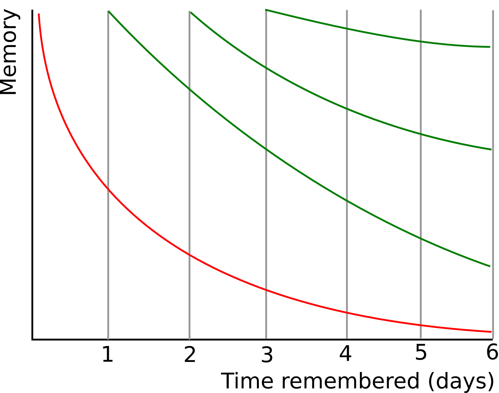
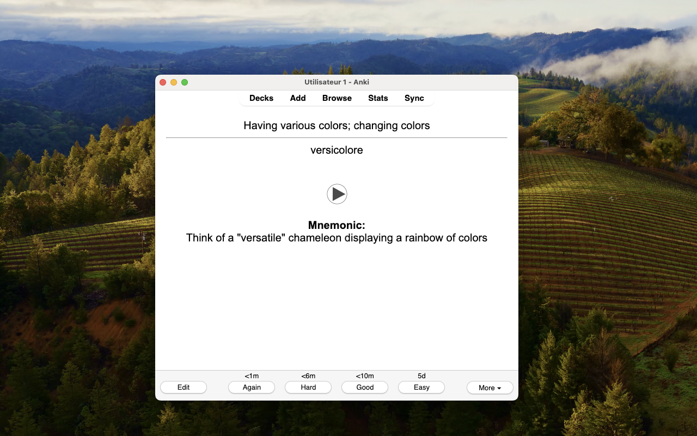
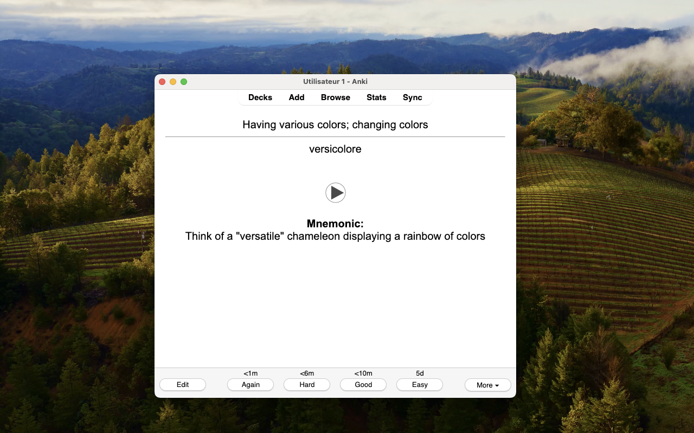

🚀 Apprenez une nouvelle langue en quelques mois, pas en années : Utilisez AnkiLingoFlash pour construire rapidement une base solide de vocabulaire
📚 Table des matières
- Introduction : Les avantages de l’apprentissage des langues
- L’importance et le défi de l’acquisition du vocabulaire
- L’ingrédient secret : La répétition espacée et les cartes mémoire générées par l’IA
🌍 Introduction : Les avantages de l’apprentissage des langues
Apprendre une nouvelle langue est bien plus qu’un simple passe-temps : c’est une porte ouverte sur d’innombrables opportunités. Cela peut considérablement booster vos perspectives de carrière, vous permettant de communiquer avec un public mondial et d’accéder aux marchés du travail internationaux. Au-delà des avantages professionnels, cela enrichit votre vie personnelle, vous permettant de nouer des liens plus profonds avec des personnes de cultures diverses et d’élargir votre vision du monde.
🎯 L’importance et le défi de l’acquisition du vocabulaire
💡 L’importance de l’acquisition du vocabulaire
Bien que l’apprentissage d’une langue englobe divers aspects tels que la grammaire, la prononciation et la compréhension culturelle, le vocabulaire constitue la base de la communication. Sans mots, même la grammaire la plus parfaite est inutile. Les recherches montrent que la maîtrise des 3000 à 5000 familles de mots les plus fréquentes dans une langue vous permet de comprendre 95 à 98 % de la plupart des textes ordinaires. Cette information nous permet de concentrer efficacement nos efforts sur l’acquisition du vocabulaire essentiel.
🚣 Le défi de l’acquisition du vocabulaire
Malgré l’importance évidente du vocabulaire, l’acquérir efficacement reste un défi majeur. Les approches traditionnelles adoptent souvent une stratégie unique pour tous, ne répondant pas aux besoins uniques, aux intérêts et aux rythmes d’apprentissage de chaque apprenant.
La personnalisation est cruciale mais souvent négligée. Alors qu’un médecin peut avoir besoin de prioriser la terminologie médicale, un guide touristique nécessite un vocabulaire lié aux voyages. Les matériels d’apprentissage standard tiennent rarement compte de ces besoins spécifiques, ce qui conduit à un apprentissage inefficace et à une motivation diminuée.
De plus, la plupart des méthodes d’apprentissage conventionnelles négligent d’exploiter des techniques cognitives puissantes qui peuvent considérablement accélérer l’acquisition et la rétention du vocabulaire. Les stratégies d’amélioration de la mémoire ne devraient pas être le domaine exclusif des experts en neuromarketing ; les approches d’apprentissage des langues peuvent et devraient intégrer ces astuces pour aider les nouveaux mots à vraiment s’ancrer dans l’esprit des apprenants.
Ces défis appellent une approche innovante de l’apprentissage du vocabulaire - une approche qui personnalise le contenu, s’adapte aux vitesses d’apprentissage individuelles et exploite des techniques de mémoire efficaces. La solution réside dans la combinaison de principes d’apprentissage éprouvés avec la technologie moderne, comme nous l’explorerons dans les sections suivantes.
🍯 L’ingrédient secret : La répétition espacée et les cartes mémoire générées par l’IA
📈 Comprendre le processus de révision
Le processus de révision joue un rôle crucial dans la consolidation des connaissances dans la mémoire à long terme. Plus nous révisons une information, plus elle s’ancre profondément dans notre mémoire.

Avec chaque session de révision, la période de rétention de l'information mémorisée est prolongée. Source : Wikipedia
{kind=link}
Par conséquent, pour un apprentissage optimal — en termes d’utilisation efficace du temps — il est essentiel que les répétitions soient de plus en plus espacées dans le temps.
Cependant, il est important de noter que l’intervalle entre les révisions peut varier d’une personne à l’autre et d’un concept à l’autre. Des facteurs tels que la complexité du matériel et la performance individuelle lors des révisions jouent un rôle significatif dans cette variation. C’est là qu’Anki intervient avec une approche algorithmique et adaptative.
🖥️ Anki : Un programme de cartes mémoire qui exploite la répétition espacée
Anki est un outil puissant qui exploite la théorie de la répétition espacée pour optimiser notre apprentissage. À sa base, Anki utilise des cartes mémoire - des outils d’apprentissage simples mais efficaces avec une question d’un côté et la réponse de l’autre.
Ce qui distingue Anki, c’est son approche sophistiquée pour programmer ces cartes mémoire. En utilisant des algorithmes avancés, Anki calcule la date optimale pour réviser chaque carte en fonction de vos performances passées. Lorsque vous répondez correctement à une carte, Anki prolonge l’intervalle avant votre prochaine révision de cette carte. À l’inverse, si vous faites une erreur, l’application raccourcit l’intervalle. Avec le temps, cette méthodologie conduit à des révisions de plus en plus espacées pour chaque élément mémorisé, favorisant une consolidation efficace et durable des connaissances. Grâce à Anki, vous pouvez ainsi vous concentrer sur les éléments qui nécessitent le plus d’attention, rendant votre apprentissage non seulement plus efficace mais aussi plus ciblé.
🤖 AnkiLingoFlash : Un outil pour automatiser le processus de création de cartes mémoire
Cependant, créer ces cartes mémoire manuellement peut être un processus chronophage et souvent fastidieux.
C’est là qu’AnkiLingoFlash intervient pour faciliter votre processus d’apprentissage. En tant qu’extension de navigateur, il s’intègre parfaitement à votre expérience de navigation web. Sélectionnez simplement n’importe quel mot ou phrase que vous rencontrez en ligne, et AnkiLingoFlash utilise l’intelligence artificielle pour générer instantanément des cartes mémoire de haute qualité.
🛠 Flux de travail d’AnkiLingoFlash
Voici comment AnkiLingoFlash fonctionne en pratique :
🖱 Sélection de mots

Sélectionnez du texte et faites un clic droit : Surlignez un mot ou une phrase, faites un clic droit et choisissez l'option pour générer une carte mémoire.
📝 Génération de cartes

Vérifiez la carte mémoire : Vérifiez la définition et le mnémotechnique générés par l'IA. Demandez une nouvelle génération ou éditez manuellement si nécessaire.
✅ Confirmation de la langue

Choisissez le paquet : Sélectionnez le paquet Anki pour ajouter votre nouvelle carte mémoire, et c'est terminé ! Définissez également la langue du mot sélectionné si la détection automatique échoue.
📚 Révision dans Anki
 
 Révision dans Anki : Après avoir créé vos cartes mémoire, révisez-les dans Anki et utilisez le guide de prononciation autant de fois que nécessaire.
Ce ne sont pas de simples paires mot-définition. Chaque carte mémoire est soigneusement structurée pour optimiser l’apprentissage :
Recto de la carte (côté question) :
- Une définition claire et concise du terme
Verso de la carte (côté réponse) :
- Le terme sélectionné et sa traduction directe dans votre langue préférée
- Un guide audio de prononciation pour le terme
- Une aide mnémotechnique générée par l’IA pour une meilleure rétention
En automatisant le processus de création de cartes, AnkiLingoFlash vous permet de vous concentrer sur ce qui compte vraiment : apprendre et retenir du nouveau vocabulaire. Cette focalisation sur l’acquisition du vocabulaire est cruciale dans l’apprentissage des langues, car elle forme la base de la fluidité et de la communication efficace.
🏆 Progrès rapides avec AnkiLingoFlash et Anki
Par exemple, atteindre un niveau B2 — considéré comme fluide pour la plupart des besoins pratiques — nécessite généralement la connaissance d’environ 4 000 mots. Avec AnkiLingoFlash, vous pouvez atteindre ce jalon en moins de 9 mois, en consacrant seulement 20 minutes par jour à l’apprentissage de 15 nouveaux mots et à la révision des mots existants. Cette approche ciblée vous aide à construire rapidement une base solide, préparant le terrain pour une communication confiante dans votre langue cible.
Il transforme votre navigation quotidienne en une opportunité d’apprentissage des langues sans effort, rendant le chemin vers la fluidité non seulement plus rapide, mais aussi plus agréable et intégré à votre vie quotidienne.
Pour plus d’informations sur les langues supportées et les tarifs, veuillez vous référer aux sections Langues supportées et Tarifs sur la page d’accueil. Pour les instructions d’installation, veuillez vous référer au Guide d’installation.